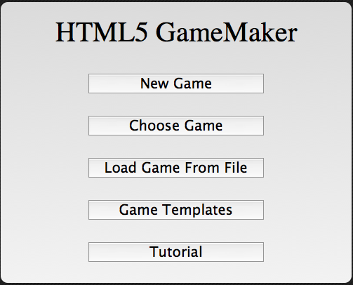
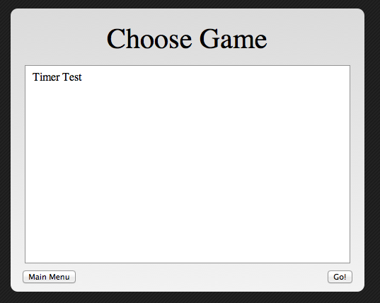
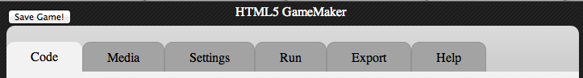
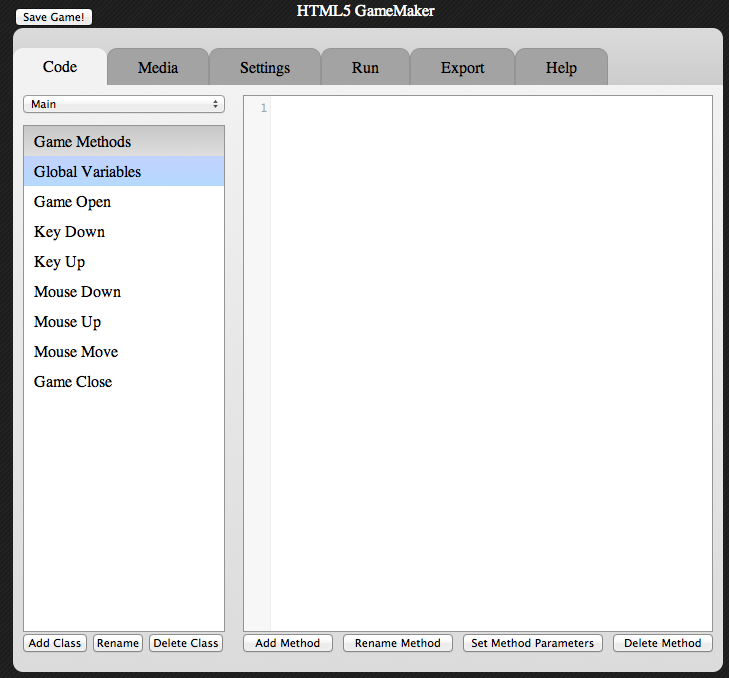
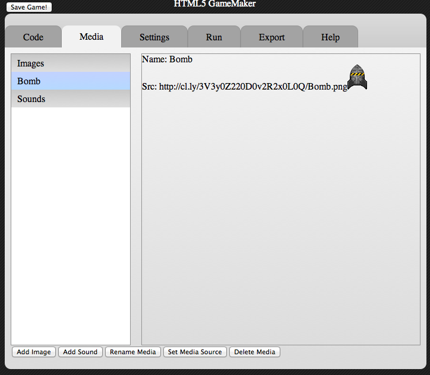
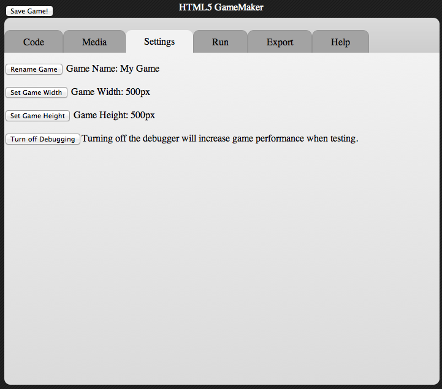
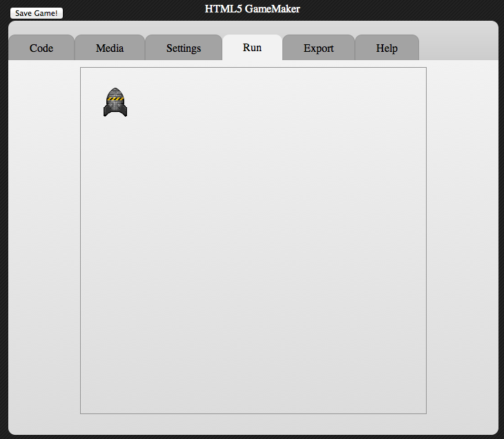
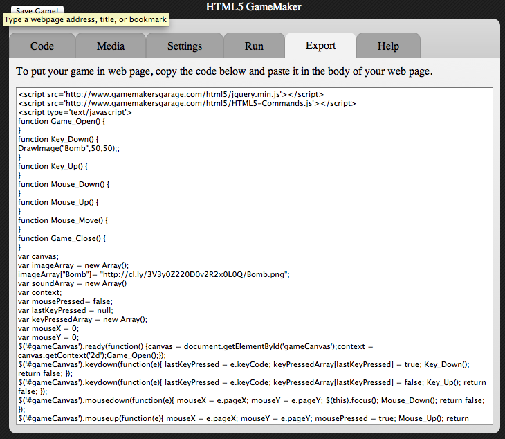
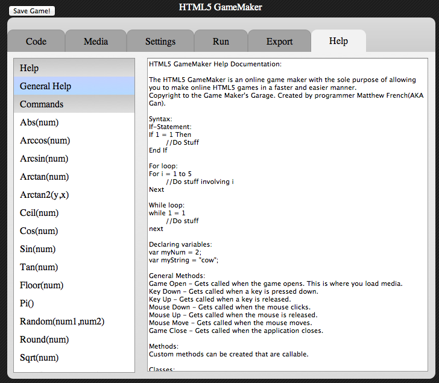

HTML5 GameMaker Tutorial

This is the main menu. From here you can choose to make a new game, choose a previously saved game, load a game from file, make a new game from a pre-made game template or view the tutorial.

This is the game choose screen. All your saved games will be shown here. You can select one to edit it.

This is the main tab bar. The top left button saves the game. The code tab allows you to edit code. Media tab is where you add in sound and music. Settings is where you edit game settings. The run tab is where you test the game. The export tab is where you can export the code to HTML or retrieve a link for others to play your game. The help tab contains the documentation on commands.

This is the code tab. The left bar contains methods. Each method holds code. The top drop down list contains classes. The main class contains the general methods that get called when events happen. Like key down. You can add and delete methods or classes at will.

This is the media tab. You can view as well as delete or create new media that will be in your game.

This is the settings tab where you edit your game settings.

The run tab is where you text the game. It contains the canvas your game is drawn on. It has fairly advanced debugging abilities.

The Export tab is where you can put your game into a web page, download the raw game file or share a compiled game link with friends.

The help tab contains general structure help as well as all the commands. Just zip through, copy a command, paste to your code and bam. Easy, simple, fast.